職人のこだわりが感じられる、精緻なフランドル積み < 旧川口橋 / 高知県 >
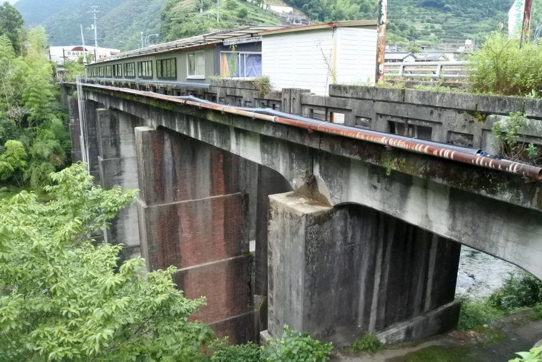
高知県の山中、仁淀川町。松山へ向かう国道33号の橋で見られる煉瓦積みの橋脚は、他ではなかなか見ることができない 貴重な土木遺産です。
昭和10年竣工の旧川口橋
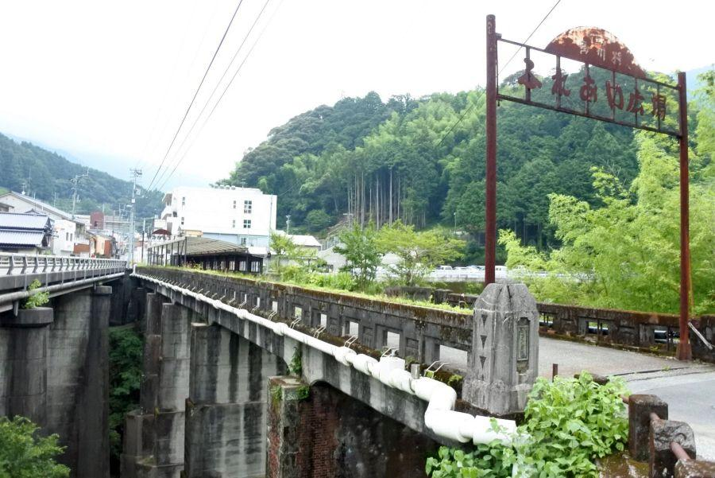
川口橋(高知県仁淀川町)
国道33号・439号の交点、土居川に架かる橋。現在は新橋が供用されており、車両はそちらを通ります。旧橋は歩いて渡ることになります。
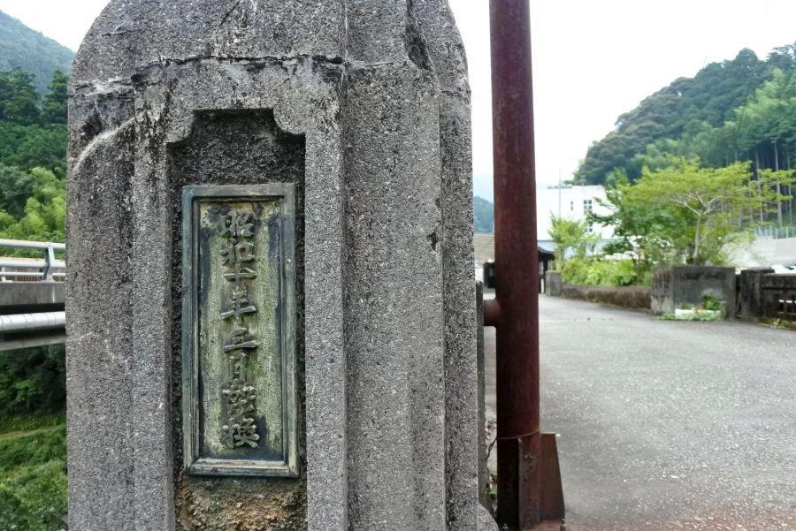
親柱に記された "昭和10年3月架換"
この年この月、アドルフ・ヒトラーがヴェルサイユ条約を破棄、再軍備を始めました。
「架換」
現在は「架け替え」と書きますが、この当時はこのように記述したのでしょうか。その意味で行くと、元々あった橋が 近代橋に換装された、という意味になります。
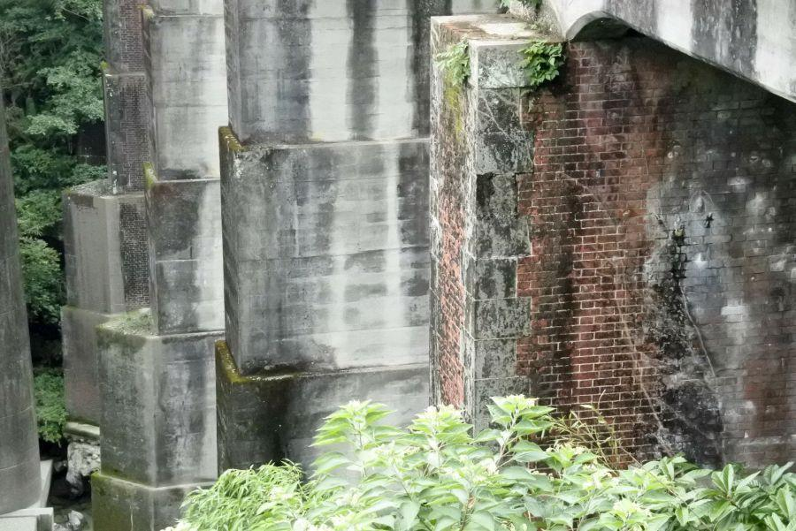
目線を下にやり 例の橋脚を眺めてみると、何層にも重ねられた美しい煉瓦積みが目に入ります。
煉瓦橋脚は二本。コンクリート橋脚と併せて 非常に脚高です。
仁淀川が清流となる理由
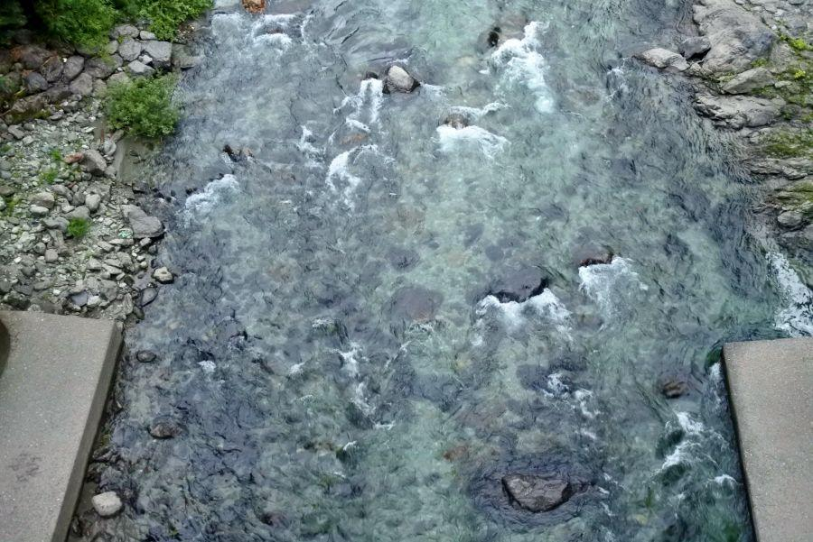
それにしても 下を流れる土居川の流れの清冽な事！
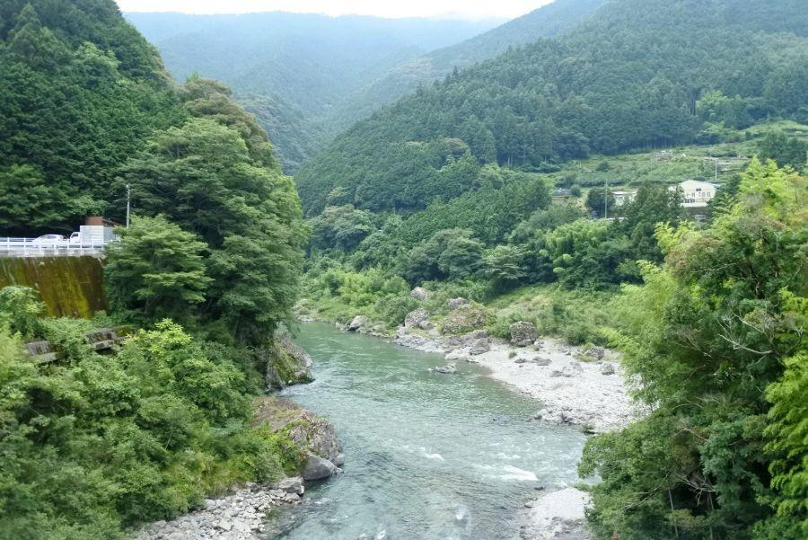
川口橋のすぐ下で 仁淀川と合流するのですが、本流はダムがある等 水質は流入河川と比べて劣ります。むしろこのような清流がいくつも流れ込むことで川を浄化、 "仁淀ブルー" と称される清らかな流れに成ります。
珍しいフランドル積みの橋脚
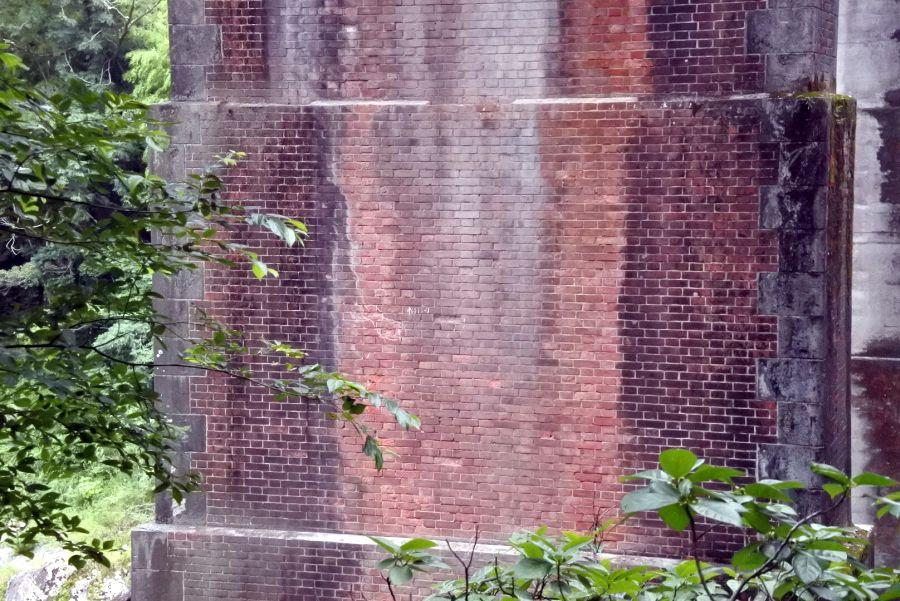
れんがの模様に注目
長手小口長手小口...
小口長手小口長手...
この積み方は "フランドル積み" と呼ばれる、日本に最初に入ってきた煉瓦工法。その積み方から 美しい模様が現れることが特徴。
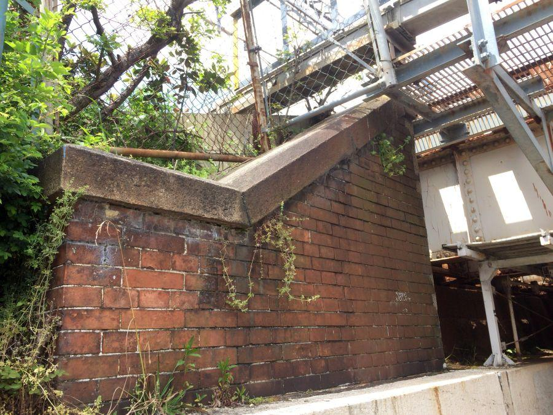
長手長手長手長手...
小口小口小口小口...
と組まれるこちらは 別の場所にある煉瓦建造物。
港等に行けばレトロな煉瓦倉庫が残されていることがありますが、それらを含む 日本国内9割以上の煉瓦建築が "イギリス積み"
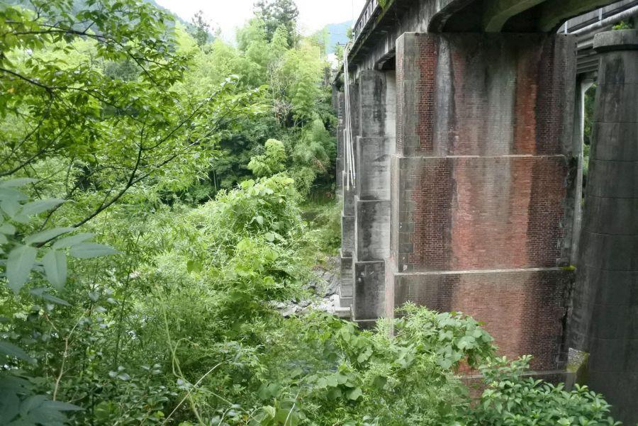
明治維新以降 先に日本に入ってきた煉瓦工法は "フランドル積み" だったのですが、新政府が鉄道を敷設するにあたり 師事を仰いだのがイギリスでした。
鉄道や駅、トンネル等 国主導の大きな事業の殆どがイギリス積みで作られるようになっていった。
その理由は、
フランドル積みはイギリス積みと比べて煉瓦の個数が必要な事。
決定的だったのが、
関東大震災で多くの建物が倒壊することになりますが、イギリス積みの建物に比べて フランドル積みの建造物の被害が大きかった。
「フランドル積みは強度に劣る」
基本的にフランドル積みの方が先に入ってきた工法→古いので 建物の耐用年数の関係とも言えるのですが、そんな風説が流れることとなり 前述の経費面からも フランドル積みは廃れていきました。
随所に見られる橋へのこだわり
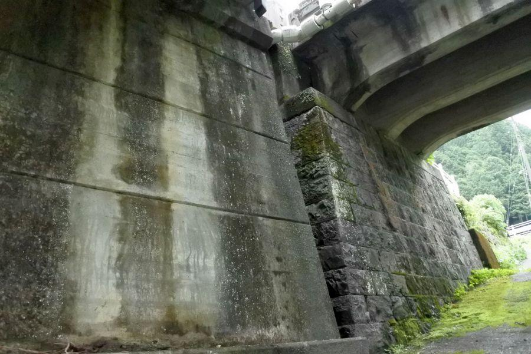
川口橋は 新旧の橋台にも注目です。
手前は戦後に架けられた現橋のものなので がっちりしたコンクリート造りですが、旧橋は切石の布積み。
日本にとって石積みは 城郭の石垣を作る等、独自のノウハウがありました。
橋台を見ると 橋が架けられた時代が ある程度わかりますが、
(古) 石積み → 煉瓦積み → コンクリート (新)
川口橋が建てられた昭和10年(1935)は、煉瓦工法と言えばイギリス積みが一般的で コンクリート資材も登場し始めていた時代。
耐用年数を考えると 敢えて経費が増大するフランドル積みや、強度に劣る石積みを採用することはないように思えるのですが、そこはこの地方の有力者のこだわりが感じられると言いましょうか、橋のスタイルが優先されているように思います。おかげで今となっては珍しい建造物が残ることとなりました。
登録有形文化財
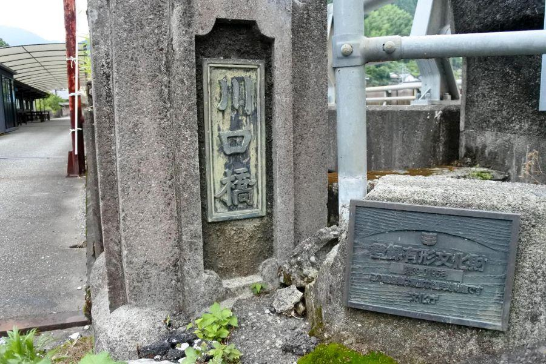
この珍しさが文化財として認められ、平成17年(2005)に登録有形文化財の指定を受けています。
登録有形文化財 第39－0195号
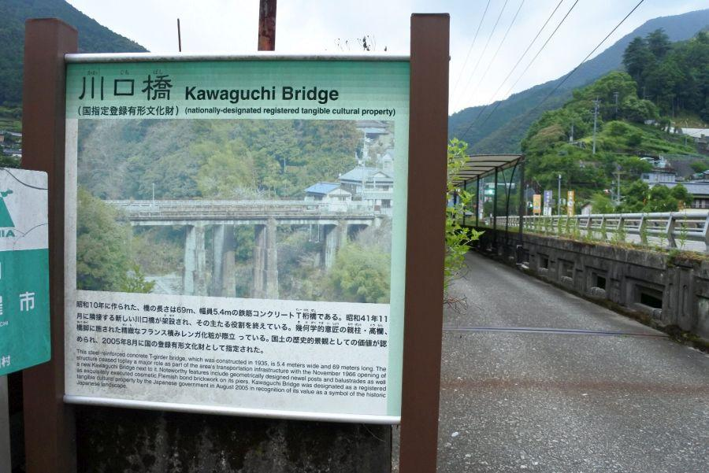
親柱(↑川口橋と記されている角の柱のこと)
高欄(欄干)
精緻なフランス積みレンガ化粧が...
意義あり！
フランドル地域はフランスだけではなく ベルギー・オランダにも跨るエリア。
フランドル ... フランス
フランデレン ... ドイツ・オランダ
フランダース ... イギリス
各国によって呼び名が異なるのも 歴史的に様々な国が入り混じっていた証。ちなみに童話「フランダースの犬」の舞台でもあります。
日本にその工法を伝えたのは確かにフランスで、イギリスに対してのフランス というスッキリ感なのでしょうが、少なくとも「フランス発祥」は誤り。
フランドルに集まった各国の職人さんたちが 知恵を絞り技術を研鑽した結晶が、美しい模様が現れる煉瓦工法 "フランドル積み" です。
仁淀町立中央公民館
※ 川口橋の地点登録がないため、最寄りの施設に照準を合わせています。
< 自家用車 >
高松駅から 約2時間40分、173km
高知龍馬空港から 約1時間30分、65km
< 路線バス >
JR佐川駅 → 黒岩観光バス → 仁淀川町役場下車
※ 主な地点からの最速・最短距離